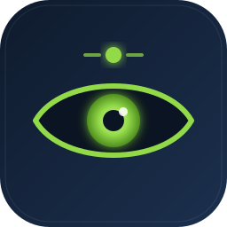
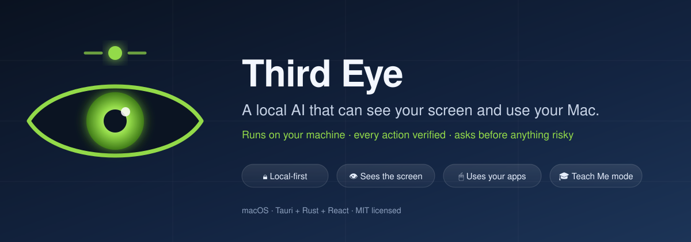
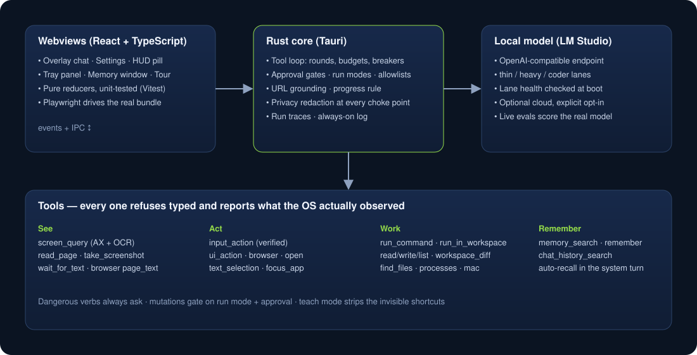

Third EyeThird Eye is a summonable overlay that pairs a language model running on your machine with real eyes and hands. It reads what is on screen, drives your apps, runs commands, edits code, and remembers — and every action is checked against what the OS actually did.

One hotkey, one panel, a model that can look and act. Each capability is a tool with a typed contract — the model cannot narrate past a failure.
The focused window through the accessibility tree first, on-device OCR second — with real click targets, in a few hundred milliseconds.
Clicks, typing and shortcuts; presses controls by name; talks to Chrome's tabs and page; reads and rewrites the text you selected in any app.
Where the cursor really landed, which app holds focus, whether the text arrived. A wrong-app readback is a failure the model must handle.
Flip a toggle and it does things the human way — visible keyboard and mouse only, narrated, ending with a numbered "do it yourself" recap.
Workspace tools, diffs in the loop, a VS Code extension that shows edits live, and a thirdeye CLI and TUI.
A local store with categories, tags, pins and expiry. Facts ride the system turn automatically. Transcripts are redacted before they are saved.
The design rule is structure over prose: a small local model treats instructions as advisory, so the guarantees live in code, not in the prompt.
sudo, rm, kill, git push, uploads, pipe-to-shell — allowlisted or not, and "always" never sticks.
macOS 14+ and LM Studio serving a tool-capable model on localhost:1234. Unsigned builds need a right-click → Open the first time.
brew tap slastrina/tap brew trust slastrina/tap brew install --cask third-eye
Or grab the DMG from Releases, drag Third Eye to Applications, open it, and follow the four-step tour (Accessibility, Screen Recording, and what each is for). The app tells you when a newer release exists.
git clone https://github.com/slastrina/third-eye.git cd third-eye npm install make install-app